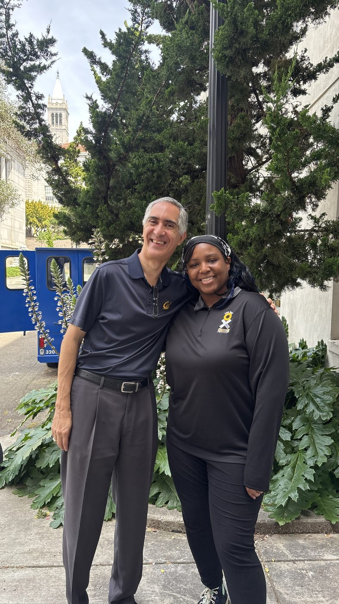

Unify discovery
One games and puzzles page gives visitors a shared starting point instead of making them choose a content type first.
01 / GamesCrafters · UC Berkeley / Case study
Redesigning a research platform of 107 games and puzzles so new players find what they want without getting lost.
← All work
01 / The problem
GamesmanUni brings together games and puzzles, but people arriving with different levels of familiarity had trouble finding a starting point. Watching both new and veteran members get confused made navigation and discovery the central design problem.
02 / Process
The work started with observing where new and veteran members became confused. The team reviews designs every five weeks. The redesign brings games and puzzles into one page, adds a 17-tag filter system across four categories, and updates four pages. A 25th anniversary prototype extends the same exploration.
03 / Decisions
One games and puzzles page gives visitors a shared starting point instead of making them choose a content type first.
Seventeen tags across four categories offer multiple ways to narrow the library. [ADD FILTER SYSTEM DIAGRAM]
Design reviews every five weeks create a recurring point to examine confusing flows and revise the pages. [ADD BEFORE/AFTER SCREENSHOTS]
04 / Outcome
Four pages have been redesigned and the games and puzzles browser has a 17-tag filter system. [ADD USER FEEDBACK OR MEASURED OUTCOME] The 25th anniversary prototype is another opportunity to test how people enter the collection.
05 / Reflection